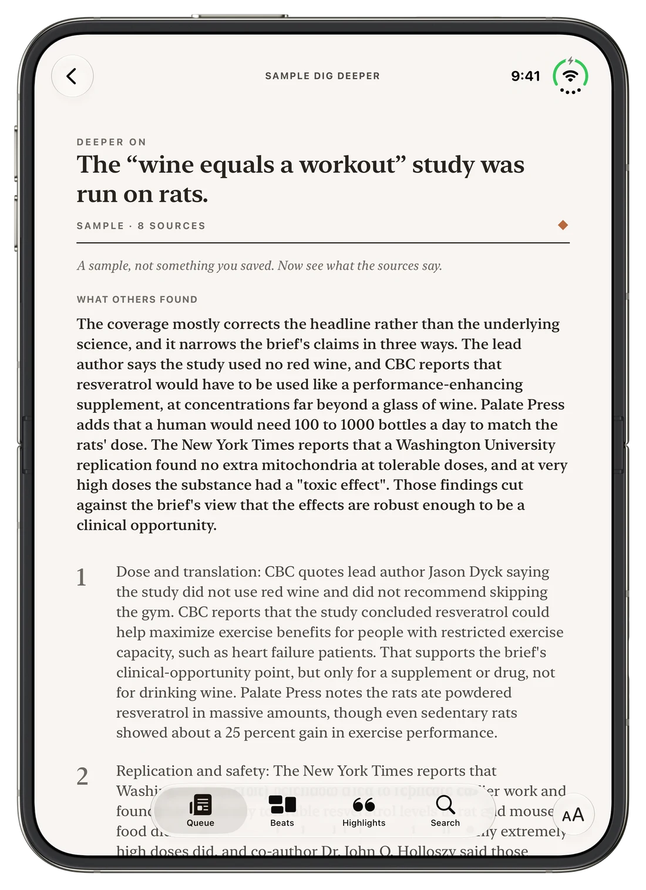
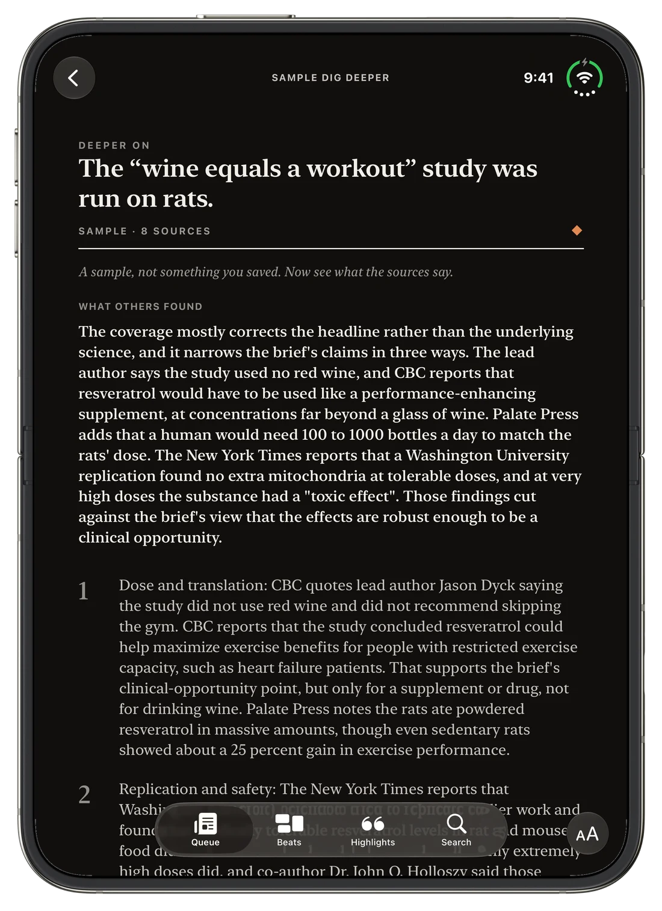

The film sets its words on paper, one line at a time, and a simple drawing acts out each one. A single orange dot stands for the lede.
Everything comes at us at once.Gray dots pour in from every edge until the page is crowded.
How do we make sense of any of it?The dots jostle. None settles.
We save it to make sense of later.A few drop into a pile at the bottom.
Later never comes.The pile keeps growing and grays over.
So we live on headlines.A heavy black bar lands on the pile, and everything under it blurs.
And hot takes that thrive on outrage.The bar cracks into shards that spin faster until the page goes dark.
The Lede slows us down.In the dark, the spinning stops and the shards lie flat as quiet lines.
It reads all of it.A slim marker moves along every line.
It unburies the lede.The first orange dot rises through the lines.
So we know if it’s worth our attention.The heavy bar shrinks to a short plain line beside the dot.
Sometimes it isn’t.The lines slide off the page. The dot holds, then fades.
When it is, we dig deeper.A new orange dot drops one fine thread down.
It looks in the research and the reporting.Threads fan out to gray dots at the edges.
And lists every source.Each far dot gets a number, and the threads pull taut.
Hear the author out.On a dark page, the orange dot alone.
Then see what the sources say.One by one, light runs along each thread from a far dot back to the orange dot.
And decide for ourselves.The threads let go. One orange dot, still.
The Lede · Check everything you read.The name on paper.
Hear the author out. Then see what the sources say.
Save anything you mean to read later. The Lede reads it, renames it for what it actually argues, and makes the author’s strongest honest case. When a piece is worth your attention, Dig Deeper looks in the research and the reporting around it and lists every source.
Free to start: 10 briefs and 2 Dig Deepers a month, no account.
Requires iOS 26 or later. On the App Store in the United States, Australia and Singapore.
The Lede on iPhone Duo, closed and open. The sample brief that comes with the app.
How it works
Know if it’s worth your attention.
Every article the desk reads comes back renamed for what it actually argues and filed on its beat. The headline it ran under stays beside the new one. Some you’ll read tonight. Some you’ll know you don’t need to.
You save it.
Tap Share on anything worth reading, in Safari or any app, and choose The Lede.
The first time you open the app, it walks you through a real save.
The desk reads it.
The desk reads it while you get on with your day.
It comes back renamed.
Ran as
“A Glass of Red Wine Equals an Hour at the Gym, New Study Finds”
Renamed
The “wine equals a workout” study was run on rats.
The headline it ran under stays beside the new one.
When it’s worth it, dig deeper.
Dig Deeper looks in the research and the reporting around it and lists every source.
What runs where, what leaves your phone, and how a Dig Deeper is checked.
Dig Deeper
When it is, dig deeper.
Tap Dig Deeper and the desk looks in the research and the reporting around the piece. It sets out what others found and where it lands, then lists every source it wrote from, each one a link to the original. It can get one wrong, so check the ones that matter to you.


The sample Dig Deeper, on iPhone Duo.
No wine.
The lead author says the study used no red wine, and CBC reports that resveratrol would have to be used like a performance-enhancing supplement, at concentrations far beyond a glass of wine.
The desk wrote this from the sources below. It can get one wrong, so check the ones that matter to you.
Every article keeps the headline it ran under, right beside the new one.
Every source is a link to the original, so you can read it yourself.
No ads, no third-party trackers, and your data is never sold.
“I built The Lede because I got tired of headlines that bury the story, or sell one that isn’t there.”
Charles Klein, maker of The Lede
Start with the next thing you save.
Nothing to sign up for and no password to make. Your library lives in your own iCloud. The free edition gives you 10 briefs and 2 Dig Deepers a month. Check everything you read with Membership. It gives you 150 Dig Deepers a month, and the desk reads it all. It starts with a 7-day free trial.